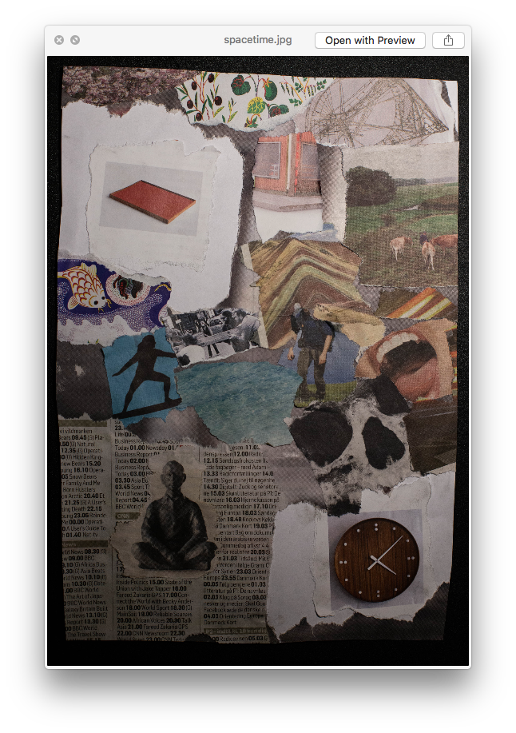
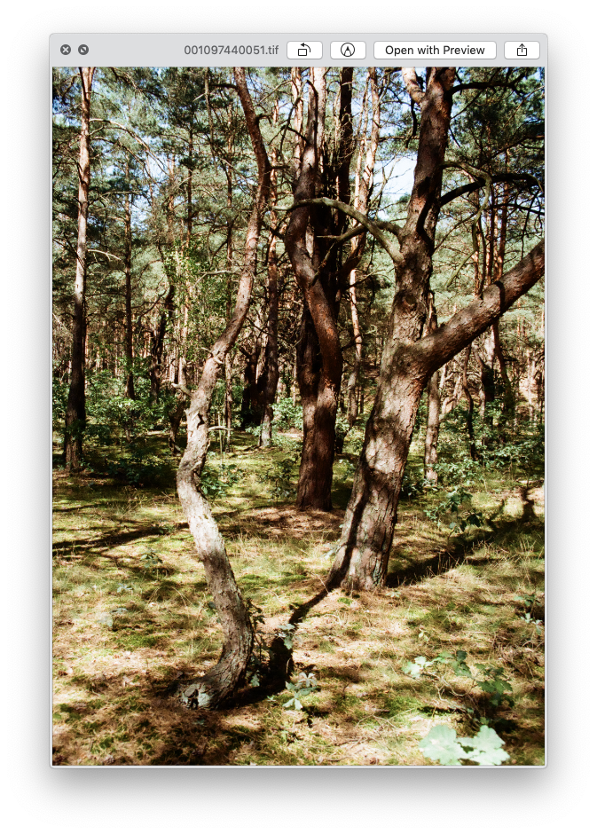
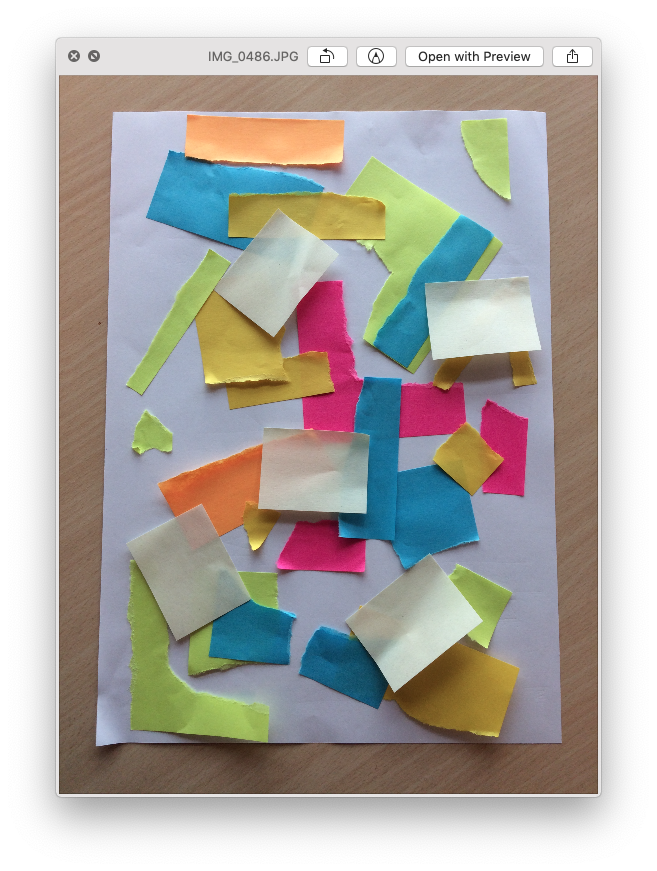
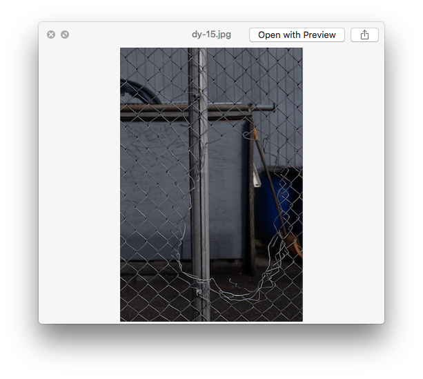

Web
Two of the website prototypes I made during last year when I started to learn coding
Dada
First pure html and css responsive website I made for school project trying to emulate and describe style of dadaism.
not dadaSafe Tree
A website made to bring attention to how trees feel and what energies they carry. Also to learn databases and fetching in JavaScript
learn more about treesPhotography
1993mm
It's my virtual notebook that I have been running for few years. tumblr Old portfolio
This is my last years portfolio
my adobe portfolio